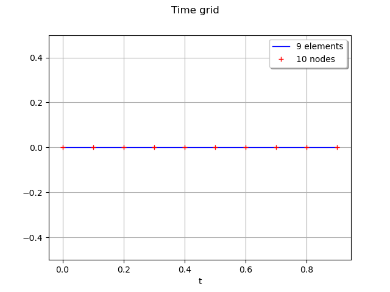
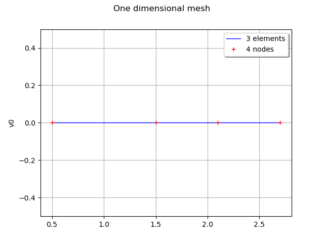
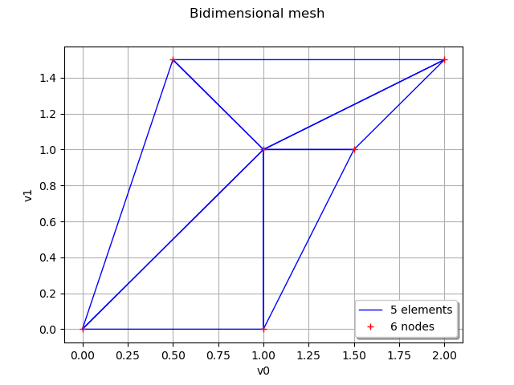
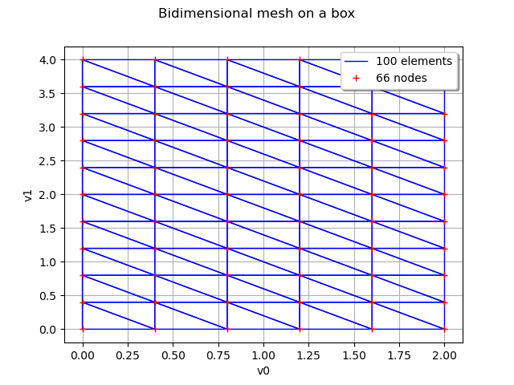
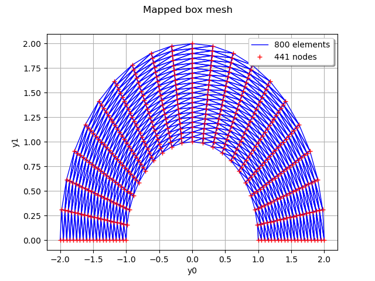
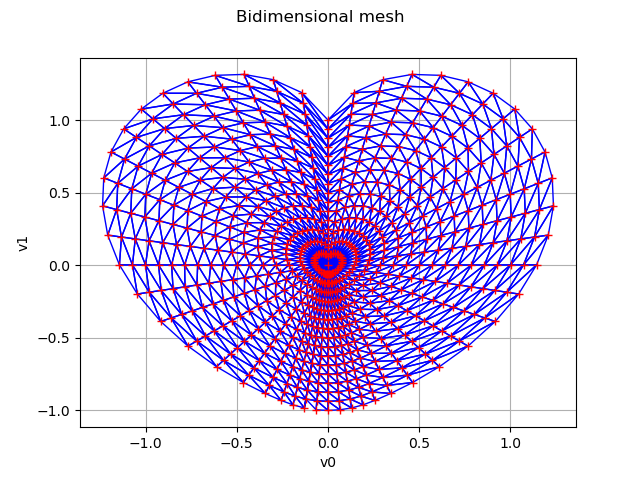

Note
Go to the end to download the full example code
Create a mesh¶
import openturns as ot
import openturns.viewer as viewer
from matplotlib import pylab as plt
import math as m
ot.Log.Show(ot.Log.NONE)
Creation of a regular grid¶
In this first part we demonstrate how to create a regular grid. Note that a regular grid is a particular mesh of ![\mathcal{D}=[0,T] \in \mathbb{R}]() .
.
Here we assume it represents the time  as it is often the case, but it can represent any physical quantity.
as it is often the case, but it can represent any physical quantity.
A regular time grid is a regular discretization of the interval ![[0, T] \in \mathbb{R}]() into
into  points, noted
points, noted  .
.
The time grid can be defined using  where is the number of points in the time grid.
where is the number of points in the time grid.
 the time step between two consecutive instants and
the time step between two consecutive instants and  .
Then,
.
Then,  and
and ![t_{Max} = t_{Min} + (N-1) \Delta t]() .
.
Consider  a multivariate stochastic process of dimension
a multivariate stochastic process of dimension  ,
where
,
where  ,
, ![\mathcal{D}=[0,T]]() and
and  is interpreted as a time stamp.
Then the mesh associated to the process
is interpreted as a time stamp.
Then the mesh associated to the process  is a (regular) time grid.
is a (regular) time grid.
We define a time grid from a starting time tMin, a time step tStep and a number of time steps n.
tMin = 0.0
tStep = 0.1
n = 10
time_grid = ot.RegularGrid(tMin, tStep, n)
We get the first and the last instants, the step and the number of points :
start = time_grid.getStart()
step = time_grid.getStep()
grid_size = time_grid.getN()
end = time_grid.getEnd()
print("start=", start, "step=", step, "grid_size=", grid_size, "end=", end)
start= 0.0 step= 0.1 grid_size= 10 end= 1.0
We draw the grid.
time_grid.setName("time")
graph = time_grid.draw()
graph.setTitle("Time grid")
graph.setXTitle("t")
graph.setYTitle("")
view = viewer.View(graph)

Creation of a mesh¶
In this paragraph we create a mesh  associated to a domain
associated to a domain  .
.
A mesh is defined from vertices in  and a topology that connects the vertices: the simplices.
The simplex
and a topology that connects the vertices: the simplices.
The simplex ![Indices([i_1,\dots, i_{n+1}])]() relies the vertices of index
relies the vertices of index  in
in  .
In dimension 1, a simplex is an interval
.
In dimension 1, a simplex is an interval ![Indices([i_1,i_2])]() ; in dimension 2, it is a triangle
; in dimension 2, it is a triangle ![Indices([i_1,i_2, i_3])]() .
.
The library enables to easily create a mesh which is a box of dimension  or
or  regularly meshed in all its directions, thanks to the object IntervalMesher.
regularly meshed in all its directions, thanks to the object IntervalMesher.
Consider a multivariate stochastic process of dimension , where .
The mesh is a discretization of the domain  .
.
A one dimensional mesh is created and represented by :
vertices = [[0.5], [1.5], [2.1], [2.7]]
simplicies = [[0, 1], [1, 2], [2, 3]]
mesh1D = ot.Mesh(vertices, simplicies)
graph1 = mesh1D.draw()
graph1.setTitle("One dimensional mesh")
view = viewer.View(graph1)

We define a bidimensional mesh :
vertices = [[0.0, 0.0], [1.0, 0.0], [1.0, 1.0], [1.5, 1.0], [2.0, 1.5], [0.5, 1.5]]
simplicies = [[0, 1, 2], [1, 2, 3], [2, 3, 4], [2, 4, 5], [0, 2, 5]]
mesh2D = ot.Mesh(vertices, simplicies)
graph2 = mesh2D.draw()
graph2.setTitle("Bidimensional mesh")
graph2.setLegendPosition("bottomright")
view = viewer.View(graph2)

We can also define a mesh which is a regularly meshed box in dimension 1 or 2. We define the number of intervals in each direction of the box :
myIndices = [5, 10]
myMesher = ot.IntervalMesher(myIndices)
We then create the mesh of the box ![[0, 2] \times [0, 4]]() :
:
lowerBound = [0.0, 0.0]
upperBound = [2.0, 4.0]
myInterval = ot.Interval(lowerBound, upperBound)
myMeshBox = myMesher.build(myInterval)
mygraph3 = myMeshBox.draw()
mygraph3.setTitle("Bidimensional mesh on a box")
view = viewer.View(mygraph3)

It is possible to perform a transformation on a regularly meshed box.
myIndices = [20, 20]
mesher = ot.IntervalMesher(myIndices)
# r in [1., 2.] and theta in (0., pi]
lowerBound2 = [1.0, 0.0]
upperBound2 = [2.0, m.pi]
myInterval = ot.Interval(lowerBound2, upperBound2)
meshBox2 = mesher.build(myInterval)
We define the mapping function and draw the transformation :
f = ot.SymbolicFunction(["r", "theta"], ["r*cos(theta)", "r*sin(theta)"])
oldVertices = meshBox2.getVertices()
newVertices = f(oldVertices)
meshBox2.setVertices(newVertices)
graphMappedBox = meshBox2.draw()
graphMappedBox.setTitle("Mapped box mesh")
view = viewer.View(graphMappedBox)

Finally we create a mesh of a heart in dimension 2.
def meshHeart(ntheta, nr):
# First, build the nodes
nodes = ot.Sample(0, 2)
nodes.add([0.0, 0.0])
for j in range(ntheta):
theta = (m.pi * j) / ntheta
if abs(theta - 0.5 * m.pi) < 1e-10:
rho = 2.0
elif (abs(theta) < 1e-10) or (abs(theta - m.pi) < 1e-10):
rho = 0.0
else:
absTanTheta = abs(m.tan(theta))
rho = absTanTheta ** (1.0 / absTanTheta) + m.sin(theta)
cosTheta = m.cos(theta)
sinTheta = m.sin(theta)
for k in range(nr):
tau = (k + 1.0) / nr
r = rho * tau
nodes.add([r * cosTheta, r * sinTheta - tau])
# Second, build the triangles
triangles = []
# First heart
for j in range(ntheta):
triangles.append([0, 1 + j * nr, 1 + ((j + 1) % ntheta) * nr])
# Other hearts
for j in range(ntheta):
for k in range(nr - 1):
i0 = k + 1 + j * nr
i1 = k + 2 + j * nr
i2 = k + 2 + ((j + 1) % ntheta) * nr
i3 = k + 1 + ((j + 1) % ntheta) * nr
triangles.append([i0, i1, i2 % (nr * ntheta)])
triangles.append([i0, i2, i3 % (nr * ntheta)])
return ot.Mesh(nodes, triangles)
mesh4 = meshHeart(48, 16)
graphMesh = mesh4.draw()
graphMesh.setTitle("Bidimensional mesh")
graphMesh.setLegendPosition("")
view = viewer.View(graphMesh)

Display figures
plt.show()
Total running time of the script: ( 0 minutes 2.209 seconds)